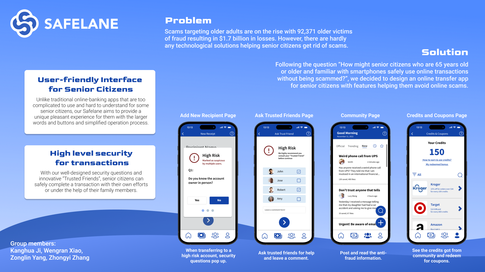

Safelane
Safelane
Following the question “How might senior citizens who are 65 years old or older and familiar with smartphones safely use online transactions without being scammed?”, we decided to design an online transfer app for senior citizens with features helping them avoid online scams.
Feature #1: High-Risk Alert
Users will receive high-risk alert when they transfer to a dubious account.
Feature #2: Trusted Friends
Users can consult their trusted friends by sendinga message to them (and call if urgent).
Feature #3: Anti-Scam Community
Online community for anti- scam information sharing. Users will receive credits for interactions in community and redeem coupons with credits.
